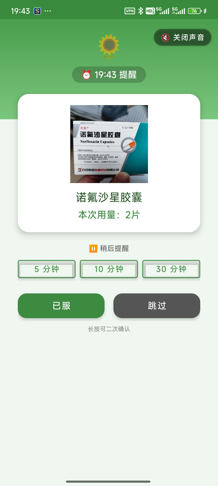
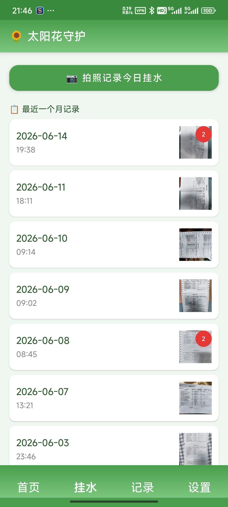
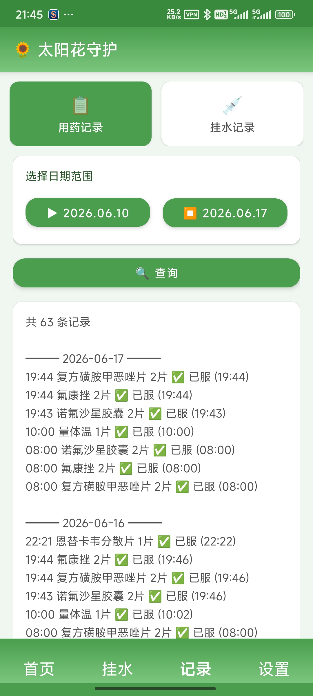
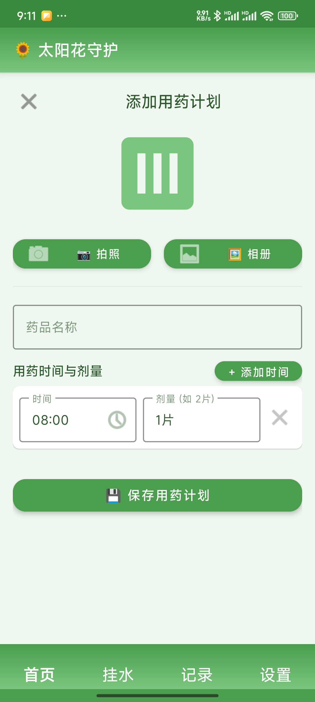

到点提醒吃药，记录每一次挂水——数据只留在你的手机里
完全离线 · 隐私优先 · 适老化大字 · 三平台同步
专为长期服药的慢病患者、老人和家属照护者设计
锁屏全屏提醒 + 声音 + 震动 + 横幅四重保障，开机自启、后台兜底，尽最大努力不漏掉每一次服药。
应用不申请联网权限，数据 100% 留在本地，无云同步、无广告、无追踪，隐私真正属于你。
大字大按钮、高对比度、关闭误触滑动、危险操作长按确认，老人也能轻松上手。
四大核心模块覆盖计划、提醒、记录、导出全流程

建立多个用药计划，每个药品支持多个时间点和各自剂量，精准到分钟。

每次挂水拍照留档，支持多张照片，可添加备注，方便复诊时给医生看。

按日期范围查询用药记录，支持 CSV / HTML 双格式导出，复诊就医更方便。

直接输入药品名称、服用时间和剂量，快速建立用药计划。
每一项设计，都为了让守护更可靠
手机锁屏也会亮屏弹出大字界面，显示药名、用量、时间和超时分钟，第一时间提醒你。
重启手机后自动恢复所有闹钟，后台兜底任务定期重排，应对系统省电杀后台。
无需进入 App，在通知栏即可标记已服、跳过或延后，操作更快更省心。
不集成任何第三方统计、推送、广告，纯净体验，专注做好一件事。
用药与挂水记录均可导出 CSV 与 HTML，复诊时给医生一份完整的服药档案。
Android、HarmonyOS、iOS 功能与版本同步，跨平台切换体验无缝衔接。
太阳花守护在代码层面不申请联网权限，你的用药数据、药品照片、挂水照片，永远只保存在你的设备本地。
安卓各厂商 ROM 后台管理差异较大，请依次检查：
1. 在「设置」Tab 确认通知权限已开启；
2. 系统设置 → 应用 → 太阳花守护 → 通知，确保「允许通知」开启；
3. 系统设置 → 应用 → 太阳花守护 → 电池，选择「不限制」；
4. 确认「闹钟 / 定时器」权限已开启；
5. 国产手机请在「自启动管理」中开启自启动，并在最近任务里锁定应用，防止被一键清理。
所有数据通过系统原生的本地数据库（SQLite）保存在你的设备上，数据安全性高、不会上传任何服务器。
但请注意：卸载应用会同时删除所有数据，更换手机或重装后数据不可恢复。建议定期通过「导出」功能备份用药记录。
进入「设置」Tab，点击「🔔 提醒铃声」，在弹出的选择界面中点击任意铃声试听，选择后点击「确定」即可。
选择的铃声仅对太阳花守护的用药提醒生效，不会影响系统其他通知。如需恢复默认，选择「默认通知铃声」即可。
更换手机或卸载重装后数据不可恢复。建议在更换前先通过「导出」功能备份用药记录，再在新设备上重新添加用药计划。
由于应用完全离线、不上云，因此无法提供云端跨设备同步——这是我们为保护隐私所做的取舍。
导出的 CSV 文件保存在手机的「下载（Download）」目录下，可通过文件管理器查找，或通过微信、邮件等方式分享给他人。
CSV 采用 UTF-8 + BOM 编码，Excel 可直接打开中文不乱码。
是的。太阳花守护在代码层面不申请任何联网权限，所有功能（提醒、记录、导出、自然语言解析）均在本地完成。
应用首次启动会弹出隐私协议，你可以在「设置 → 隐私说明」随时查看完整隐私政策。